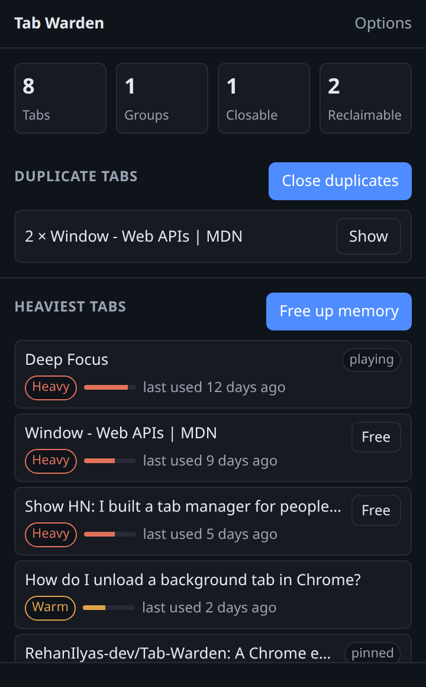
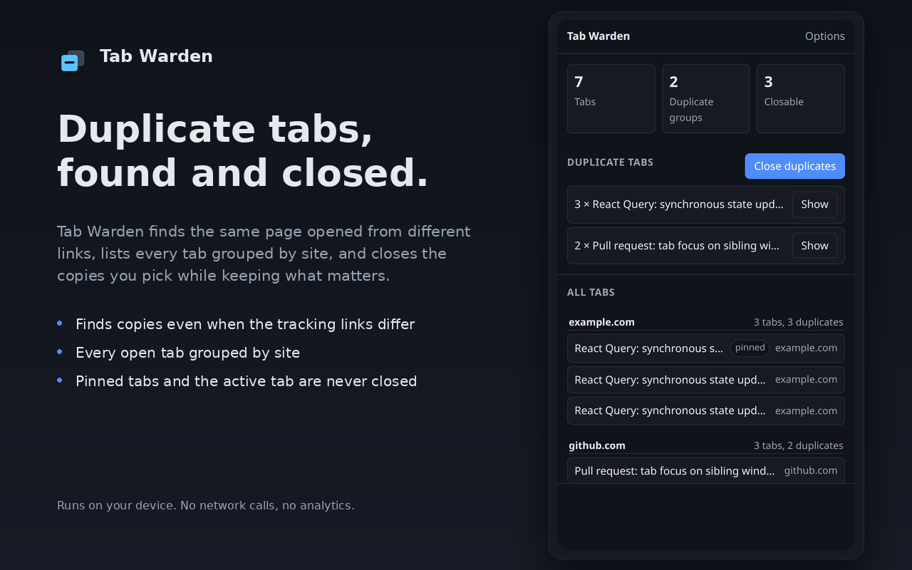

Find the copies. Unload the idle ones.
You open the same page from a newsletter, a search result, and a link in a chat, and end up with nine tabs pointing at one page. Tab Warden finds those copies, closes them, and frees the memory held by the tabs you have not touched in days.
Chrome 120 or newer. Free, no account, no sign in, nothing tracked.

What it does
One question, answered: what is costing me right now, and what can I close.
It sees the copies, not just the same address
Tabs are compared by their real page, with tracking parameters stripped and YouTube links matched by video id. Nine tabs opened from a newsletter collapse into one row.
Every tab, grouped by where it came from
The full list of your open tabs, grouped by domain and ordered by when you last used them. Click any row to jump to that tab and bring its window forward.
It tells you which tabs are heavy
Every tab gets a score from how long it has been idle, whether it is playing audio, and whether it is a duplicate. The heaviest ones sit at the top, with a plain reading of how long you have left them alone.
It lets go of the memory a tab was holding
Unloading empties the memory a background tab was holding and leaves the tab in place, so it reloads when you click it. Nothing is lost except an unsaved form, and the extension says so before it acts.
It does the same on its own, once a day
Turn on one switch and the extension wakes up once a day and frees the idle tabs while the browser is open. It is off by default, and the popup tells you when it last ran and what it freed.
It will not touch what you care about
The tab you are looking at is never closed or unloaded, in any window. Pinned tabs and tabs playing audio are left alone by default, and every action asks first.
How it works
Three steps, and none of them take more than a second.
Open the popup
Click the Tab Warden icon. You see four numbers, the duplicate groups, and your five heaviest tabs.
Pick what to let go of
Close the copies, free one heavy tab, or free them all at once. Every action shows a confirmation first and then reports how many were done and how many were kept.
Let it run by itself, if you want
Turn on the daily clean up in the options and the same rules apply on their own, once a day, without you opening anything.

What it will not do
- It makes no network requests. There is no server, no analytics, no telemetry, and no crash reporting.
- It does not load or run remote code.
- It does not read the content of web pages and does not inject scripts into them.
- It does not sell, rent, or share anything with anyone.
- It does not show ads.
Questions
Do I need an account?
No. There is no sign in and nothing to create. The extension works straight after you load it.
Will it close a tab I still need?
The tab you are looking at is never closed or unloaded, in any window. Pinned tabs and tabs playing audio are kept by default. You can turn those guards off in the options if you want, and closing always asks first.
What happens to a tab when it is unloaded?
Chrome frees the memory that page was holding and keeps the tab in the strip. The page reloads when you click it, the way a tab does after a restart. Anything you had not saved on that page is gone.
Does the weight show real memory?
No, and the popup says so. Chrome does not give extensions a real memory figure for a tab, so the score is an estimate built from how long a tab has been idle, whether it is playing audio, and whether it is a duplicate.
Is it in the Chrome Web Store?
Not yet. The submission is in review, and the download on this page is
the same build that goes to the store. Load it unpacked from
chrome://extensions while you wait.
Privacy policy
The short version is above. This is the full version, which is the one the Chrome Web Store reads.
Tab Warden is a Chrome extension that finds duplicate tabs, lists every open tab grouped by site, closes the copies you choose to remove, and unloads the tabs you have not used. It can also do that unloading on its own once a day, if you turn that on. This page explains what it reads, what it stores, and what it does not do.
What the extension reads
- The URL and title of your open tabs, so it can spot duplicates and group tabs by site.
- Whether a tab is pinned, playing audio, or already unloaded, so it can pick which copy to keep.
- Which window a tab belongs to, so it can bring that window forward when you click a row.
- Which tab you are currently looking at, so it never closes it.
- When a tab was last used, so it can tell you which ones have been sitting idle.
This information is requested from Chrome each time the popup opens. It is held in memory while the popup is open and is never written to disk. If you turn on the daily clean up, the same tab details are read once a day, in the background, and are used only to decide which tabs to unload. They are not written to disk.
What the extension stores
Five preferences are saved on your device with chrome.storage.local:
ignorePinnedWhenClosing, whether pinned tabs are skipped when closing or unloading.confirmBeforeClosing, whether a confirmation row appears before closing.staleAfterDays, how many days a tab has to be unused before it counts as idle.skipAudibleWhenDiscarding, whether tabs playing audio are left alone.autoFreeEnabled, whether the daily clean up runs on its own.
The daily clean up also keeps a record of its last run: the time it ran, how many tabs it unloaded, and how many it kept. That record holds three numbers, no tab titles, no URLs and no browsing history.
Nothing else is stored. No tab titles, URLs, or browsing history are saved.
What the extension does not do
- It makes no network requests. There is no server, no analytics, no telemetry, and no crash reporting.
- It does not load or run remote code.
- It does not sell, rent, or share data with anyone.
- It does not read the content of web pages and does not inject scripts into them.
- It does not show ads.
Permissions
-
tabs: read the URL, title, and last used time of open tabs. Without this permission, Chrome only exposes tab identifiers, which are not enough to find duplicates or to tell which tabs have been left idle. -
storage: save the five preferences listed above on this device, and the record of the last daily clean up. -
alarms: wake the extension up once a day so the daily clean up can run while the browser is open. It is used for nothing else, and it does not send anything over the network.
No other permissions are requested.
Your control over the data
Your preferences stay on your device until you change them or remove the extension. Removing the extension deletes them. Tab data is never kept, so there is nothing else to delete.
Limited Use
The use of information received from Google APIs will adhere to the Chrome Web Store User Data Policy, including the Limited Use requirements.
Changes to this policy
If this policy changes, the date at the top of this page changes with it. The current version always lives at this URL.
Contact
Rehan Ilyas, rehanilyas4726@gmail.com. You can also open an issue at github.com/RehanIlyas-dev/Tab-Warden.